부서원 저렴이
소분 A: 쿠키/프레첼 지퍼백
{kind=link}
{kind=link}
{kind=link}
- 큰 봉지 6-8개를 사서 한국에서 18-25개 지퍼백으로 소분
- 1봉지에 쿠키/프레첼/초콜릿 2-3종 섞기
- 지퍼백은 한국에서 준비해도 됨
회사 전체 비용을 확 낮추는 방식. 포장만 깔끔하면 단품보다 덜 성의 없어 보임.
Hyatt Seaport 기준. 5/4 월요일은 풀로 쓸 수 있는 메인 날, 5/5 화요일 오전-점심은 일정 때문에 제외, 5/7 목요일 12:30 비행은 이동일로 비웁니다.
월요일을 가장 크게 쓰고, 화요일은 오후부터만 잡습니다. 회사용과 가족 포장은 Trader Joe's에서 수량을 맞추고, 선물감은 Harvard 굿즈와 TJ 간식/보조품으로 올립니다. 약국템은 회사 대량 선물이 아니라 와이프/가족/본인 상비용으로만 좁혀 넣은 현실안입니다.
월요일 핵심
의류·모자·조카 옷은 Harvard Square에서 먼저 보고, 바로 Trader Joe's 748 Memorial에서 토트/대량 간식을 확보합니다.
화요일 조건
5/5는 오후부터 Copley/Prudential/TJ 500 Boylston/View Boston/Fenway 옵션만. 오전 일정은 문서에서 비워뒀습니다.
수요일 마감
수요일은 무리하게 별도 매장을 쫓지 말고, 부족한 TJ 토트·간식과 약국 보조템만 채운 뒤 밤에 포장합니다.
| 날짜 | 쓸 수 있는 시간 | 동선 | 그때 살 것 | 지도 |
|---|---|---|---|---|
| 5/4 월 풀데이 | 오늘/내일 중 가장 크게 쓸 수 있는 날 | Seaport → Tea Party → Harvard Yard/Shop → Harvard Natural History 옵션 → Trader Joe's 748 Memorial → View Boston 옵션 | Harvard 의류·모자·조카 옷 먼저, TJ 토트/대량 선물 1차 | 5/4 고밀도 경로Cambridge 확대 경로 |
| 5/5 화 오후부터 | 오전-점심 일정 있음. 비워둠 | 오후 BPL/Copley → TJ 500 Boylston → Prudential/CVS 10분 → View Boston(맑으면) → Fenway 옵션 | 대량 간식 + 회사 친한사람 토트세트 + 약국 보조템 + Red Sox/Fenway 옵션 | 5/5 오후 Google 경로 |
| 5/6 수 마감일 | 비 가능성/실내 위주 | MFA/Gardner는 체력 되면. 우선은 TJ Fort Point 보충 | 와이프/가족 토트세트 마감, 밤에 포장 | 5/6 Google 경로 |
| 5/7 목 | 12:30 비행 | 관광 없음. 체크아웃/공항 이동/수하물 정리만 | 액체·오일·시럽은 위탁. 식품은 신고 기준 보수적으로 |
일찍 나갈 수 있으면 아래처럼 채우는 게 제일 좋습니다. 단, Harvard Art Museums는 월요일 휴관이라 넣지 않고, Harvard에서 충분히 보고 산 뒤 TJ 748 Memorial로 넘어가는 게 핵심입니다.
쇼핑 우선
Tea Party 투어까지 하면 Harvard Natural History도 짧게만 봅니다. 쇼핑 시간이 밀리면 박물관보다 Harvard Shop/Coop을 우선하세요.
대학 굿즈
남동생/친구 선물도 Harvard 소형 굿즈와 TJ 세트로 충분히 대체됩니다. 이동을 줄이는 쪽이 낫습니다.
저녁 선택
맑으면 20시대에 붙이고, 흐리면 바로 숙소 복귀해서 지퍼백 간식/토트세트/부서장님 선물을 분리하는 게 더 효율적입니다.
| 시간 | 장소 | 할 것 | 주의 |
|---|---|---|---|
| 07:45-08:20 | 숙소 출발 + Seaport/Harborwalk | 어제 사진을 못 찍었으니 아침 빛으로 숙소 주변 10-15분만. 커피 들고 바로 이동. | 늦게 나가면 뒤 일정이 무너져서 08시 전후 출발이 핵심. |
| 09:30-09:55 | Boston Tea Party Gift Shop/Tea Room | 선물만 보면 티/소형 기념품을 빠르게. 박물관 투어까지 하면 10:00-11:15로 잡기. | 공식 안내 기준 투어 10AM-5PM, Gift Shop/Tea Room 9:30AM-6PM. |
| 10:05-11:35 | Tea Party 투어 또는 바로 Cambridge 이동 | 관광 밀도까지 올리려면 10시 투어. 쇼핑 밀도 우선이면 투어를 생략하고 Harvard로 빨리 이동. | 둘 다 욕심내면 점심이 밀림. 오늘 기분 따라 하나 선택. |
| 12:10-13:00 | Harvard Square 점심 + Harvard Yard | John Harvard Statue, Widener 외관, Memorial Hall/Sanders Theatre를 빠르게 사진 루프. | Harvard Art Museums는 월요일 휴관이라 넣지 않기. |
| 13:00-14:00 | Harvard Museum of Natural History 옵션 | 유리꽃/광물/동물 표본이 유명해서 짧게 봐도 만족도가 높음. 관심 없으면 쇼핑 시간을 늘리기. | 공식 기준 매일 9AM-5PM. |
| 14:00-15:10 | Harvard Shop + Harvard Coop | 부모님/형제/조카용 의류, cap, onesie, 문구류 먼저 확정. | Harvard Shop 1380 Mass는 9AM-8PM, 52 JFK/65 Mt Auburn은 10AM-8PM. |
| 15:20-16:10 | Harvard Square 여유/카페 또는 캠퍼스 사진 | Harvard에서 사진·굿즈·간식 시간을 확보. 이미 충분하면 바로 TJ로 이동. | 선물 쇼핑이 더 중요하니 동선을 늘리지 않기. |
| 16:20-17:20 | Trader Joe's 748 Memorial | 회사 선물 1차 확보. 대량 간식, 친한사람 10명용 토트, 가족용 토트 순서. | 입구/계산대에서 'bag limit today?' 먼저 물어보기. 제한 있으면 일반 reusable bag으로 대체. |
| 17:30-18:30 | Harvard/Central 저녁 | Cambridge에서 먹고 이동. 쇼핑백이 많으면 숙소 복귀가 먼저. | 이때 토트/회사용 수량이 부족하면 5/5 TJ 500 Boylston으로 넘김. |
| 20:15-21:30 | View Boston 옵션 | 날씨가 맑고 체력이 남으면 전망대. 흐리거나 피곤하면 생략하고 숙소에서 포장. | 공식 기준 10AM-10PM, 마지막 입장 9:15PM. |
회사 쪽은 일반 부서원=지퍼백 간식, 회사에서 친한사람 10명=저렴 토트/리유저블백 미니세트, 부서장님=한 단계 위 선물로 나눕니다. 가족도 TJ 토트백에 넣어 주는 편이 보기 좋고, 돈은 와이프/가족/친한친구 쪽에 더 씁니다.
| 대상 | 등급 | 추천 구성 | 예상가 | 메모 |
|---|---|---|---|---|
| 부서원 8명 | 지퍼백 소분 | TJ 쿠키/프레첼/PB Cups/견과류를 대량 구매해서 한국에서 지퍼백에 1인분씩 소분. 개별 단품 선물보다 비용을 낮춤. | $1.50-3/명 | 부서장님이 이 8명 안에 포함이면 일반 부서원 7명 + 부서장님 1명으로 나눠 계산. |
| 회사 친한사람 10명 | 저렴 토트 미니세트 | Trader Joe's Reusable Bag 또는 Mini Canvas가 있으면 그 안에 지퍼백 간식 1개를 넣기. 한정 토트 제한이 걸리면 일반 reusable bag으로 통일. | $4-8/명 | 10세트 목표. Mini Canvas/한정 토트는 1인 제한 가능성이 있어 500 Boylston+748 Memorial 두 번 나눠 확인. |
| 부서장님 1명 | 한 단계 위 | Harvard cap/notebook/pen + TJ 고급 간식/시즈닝. 약국템은 선물감이 약하니 넣어도 Aquaphor 1개 정도만 보조. | $25-55 | 부담스럽지 않게 ‘보스턴 다녀온 티’가 나는 구성이 좋음. 음식만 주기보다 Harvard 소품 하나를 섞기. |
| 예비 3-5개 | 비상 | 남는 지퍼백 간식, Harvard magnet/keychain/pen, TJ 초콜릿. | $2-8/개 | 돌릴 사람 갑자기 늘 때 대비. 약국 립밤보다 Boston/Harvard/TJ 느낌이 낫습니다. |
| 대상 | 등급 | 추천 선물 | 예상가 | 이유/주의 |
|---|---|---|---|---|
| 와이프 | 제일 챙김 | TJ Mini Insulated/Mini Canvas 또는 Harvard tote 안에 MFA scarf/tote 후보 + TJ Hand Cream/초콜릿 + Aquaphor 보조 | $45-120 | 가족 중 1순위. 약국은 메인 선물보다 토트 안 실용템으로 넣는 게 좋습니다. |
| 친한친구 1명 | 꽤 챙김 | Harvard/Red Sox cap 또는 Harvard 소형 굿즈 세트 + TJ 토트 + TJ 초콜릿/간식 | $35-70 | 회사 친한사람 10명보다 확실히 올림. 보스턴 스포츠 좋아하면 Red Sox cap이 좋음. |
| 엄마 | 제대로 | TJ/Harvard tote 안에 Harvard 크루넥 또는 MFA scarf + Boston Tea Party tea tin/초콜릿 + Aquaphor | $45-90 | 토트백 포장이 좋음. 차를 드시면 Tea Party tin이 Boston 이야기로 좋음. |
| 아빠 | 제대로 | TJ reusable bag 안에 Harvard cap/crewneck 또는 Red Sox cap + Mushroom/Nori + Boston Tea Party tea + Band-Aid/Advil 상비용 | $35-85 | 로고 큰 후드보다 cap/크루넥이 오래 쓰기 좋을 수 있음. 약은 복용 가능 여부 확인. |
| 누나 | 꽤 쓸만함 | TJ Mini Canvas/Insulated Tote + TJ Hand Cream/Aquaphor + PB Cups/초콜릿 + Harvard magnet | $15-45 | 실사용 가능한 가방+작은 보조품/간식 조합. |
| 남동생 | 꽤 쓸만함 | TJ tote 안에 Harvard pen/folder/magnet/keychain + Mushroom/Nori/간식. 원하면 Harvard cap 추가. | $15-45 | 공대 굿즈를 억지로 넣지 말고 Harvard 소형 굿즈로 맞추기. |
| 여동생 2명 | 비슷하게 | 각자 TJ Mini Canvas 또는 일반 reusable bag + Hand Cream/Aquaphor/PB Cups + Harvard sticker/pen | $10-35/명 | 둘이 차이 나지 않게 비슷한 구성으로 맞추기. |
| 매형 | 적당히 | TJ reusable bag 안에 Red Sox/Harvard cap 후보 또는 Mushroom & Company + Garlic Butter Nut Mix | $12-50 | 취향 모르면 cap 대신 시즈닝/간식 세트로 낮춰도 됨. |
| 여동생 남편 (매제/매부) | 적당히 | TJ reusable bag 안에 Garlic Butter Nut Mix + Mushroom/Nori + 초콜릿. cap은 선택. | $12-50 | 매형과 비슷하게 무난 남성 선물. 대학 굿즈는 Harvard로 통일. |
| 조카 4살 | 귀여운 것 | Harvard kids tee, Harvard keychain plushie/인형, Make Way for Ducklings 책, MBTA 작은 기차 | $12-35 | Boston 대표 그림책이라 훨씬 기억에 남음. 작은 부품 있는 장난감은 피하기. |
| 조카 1살 | 귀여운 것 | Harvard baby onesie/bib, 부드러운 plush, board book | $12-30 | 먹는 선물보다 옷/턱받이/보드북. 사이즈는 넉넉하게. |
매장에서 바로 조합할 수 있게 메뉴판처럼 만들었습니다. 가격은 세금 전 대략가이고, Trader Joe's 재고에 따라 토트/쿠키/간식은 현장에서 바꾸면 됩니다. 별도 로컬 매장을 들르지 않아도 되게 전부 TJ/Harvard 대체안으로 잡았습니다.
부서원 저렴이
회사 전체 비용을 확 낮추는 방식. 포장만 깔끔하면 단품보다 덜 성의 없어 보임.
회사 친한사람 10명
토트가 선물감을 만들고 내용물은 소분 간식으로 비용을 낮춤. 10명 기준 $40-80.
요리하는 동료만
전원에게 돌리지 말고 요리할 사람에게만. 회사 예산을 아끼는 쪽이 맞음.
친한친구 1명
회사 동료보다 확실히 올림. 별도 초콜릿 매장 없이 TJ 초콜릿으로 충분히 대체.
부서장님
로컬 초콜릿/향신료 매장은 이번 동선에서 제외해도 무방. Harvard 소형 굿즈가 들어가면 충분히 단정함.
부서장님
부담스럽지 않은 상급자 선물. cap 취향이 애매하면 Harvard notebook/pen으로 대체.
엄마/아빠/형제
가족에게도 토트백 포장이 좋음. 단, 한정 미니 토트 수량 제한이 있으면 부모님/와이프/친한친구에게 우선 배정.
와이프/부모님/집 상비
선물 메인은 아니지만 미국 약국에서 살 의미는 있음. 의약품은 회사/동료 대량 선물로 돌리지 않기.
와이프
가방만 주기보다 메인 선물 하나를 넣는 구성. MFA를 못 가면 Harvard tote/cap으로 대체.
남동생/매형/매부
모자 취향이 애매하면 토트+간식+시즈닝으로 낮추면 됨. 대학 굿즈는 Harvard로 통일.
현장에서 장바구니에 넣을 총량입니다. 회사 간식은 한국에 와서 지퍼백으로 나누는 전제라, 개별 포장 수량보다 큰 봉지 수량을 먼저 맞추면 됩니다.
| 구분 | 목표 수량 | 살 것 | 메모 |
|---|---|---|---|
| 부서원 지퍼백 | 8개 | TJ 쿠키/프레첼/초콜릿을 소분 | 부서장님이 8명 안에 포함이면 일반 지퍼백은 7개로 줄임. |
| 회사 친한사람 토트세트 | 10세트 | 저렴 토트/Reusable Bag 10개 + 지퍼백 간식 10개 | Mini Canvas/한정 토트가 있으면 좋지만 제한 걸리면 일반 reusable bag으로 통일. |
| 가족용 TJ 토트세트 | 8-10세트 | 와이프/엄마/아빠/누나/남동생/여동생2/매형/매부 후보 | 토트가 부족하면 와이프·엄마·누나·여동생 우선, 남성 가족은 일반 bag도 OK. |
| 토트/리유저블백 총량 | 18-22개 목표 | 회사 친한 10 + 가족 8-10 + 예비 2 | 한정 토트는 1인 1-6개 등 매장별 제한 가능. 일반 reusable bag으로 바로 대체. |
| 대량 간식 원재료 | 큰 봉지 8-12개 | Mini Pretzels, PB Cups, Sweet Onion Pretzels, Pinks & Whites Cookies, 견과류 | 한국에서 18-25개 지퍼백으로 나눌 기준. 남으면 예비 선물. |
| 부서장님 세트 | 1세트 | Harvard cap/notebook/pen + TJ 시즈닝/간식 | $25-65 사이에서 조절. 별도 로컬 매장 생략. |
| 친한친구 세트 | 1세트 | Harvard/Red Sox cap 또는 Harvard 소형 굿즈 + TJ 토트/간식 | $35-70. 가족/와이프 다음으로 챙김. |
| 회사 예비 | 4-5개 | Harvard magnet/keychain/pen/sticker 또는 TJ 초콜릿 | 갑자기 줄 사람 늘 때. 작고 안 깨지는 것. |
| Harvard 소형 굿즈 총량 | 12-18개 | Pen 4-6, magnet/keychain 4-6, sticker/folder/pencil 4-6 | 작고 가벼운 예비 선물로 가장 안전. |
| Harvard 인형/키체인 plush | 1-2개 | 조카 4살 1개, 여유 있으면 조카/가족 예비 1개 | 작은 부품 여부 확인. 너무 크면 캐리어 부담. |
| Harvard 의류·모자 | 3-5개 | 부모님/와이프/남동생/매형·매부 후보 | 사이즈 모르면 cap 위주. 대학 굿즈는 Harvard로 통일. |
| 가족·와이프 보조 선물 | 8-12개 | TJ hand cream/lip balm/초콜릿/시즈닝 + Harvard 소형 굿즈 | 별도 로컬 매장 없이 TJ에서 마감 가능하게 잡음. |
| 약국 상비/보조템 | 5-9개 | Aquaphor 1-3, Hydro Seal 1-2, Neosporin 1, Advil/Tylenol 0-1, travel size 보충 | 가족·와이프·본인용. 회사/동료 선물 수량에는 넣지 않음. |
| Boston 특화 선물 | 4-8개 | Tea Party tea tin 1-3, Red Sox cap/ball/keychain 1-2, Make Way for Ducklings 1, MFA tote/scarf 1-2 | 시간이 맞는 곳만. Boston에서 산 티가 확실히 남. |
| 최종 안전 수량 | 총 60-80개 단위 | 회사 30-40개 + 토트 18-22개 + Harvard 소형 12-18개 + 가족 메인 8-12개 + 약국 5-9개 | 중복 수량 포함. 실제 포장 단위는 30명 내외. |
개인이 살 수 있는 개수는 전국 고정 규칙으로 보기 어렵고, 매장/출시 차수/재고에 따라 바뀝니다. 한정 Mini Canvas·Mini Insulated·시즌 토트는 제한이 걸릴 수 있으니, 가족용 한정 토트와 회사용 일반 reusable bag을 분리해서 생각하면 안전합니다.
| 품목 | 제한 가능성 | 확인한 흐름 | 현장 행동 |
|---|---|---|---|
| Mini Canvas / Mini Insulated / 시즌 한정 토트 | 높음 | 공식 상품은 limited time/limited supply 성격이고, 2024-2026 사례상 매장별로 1인 1개, 2개, 4개, 6개 등 제한이 달랐음. | 입구/계산대에서 “Is there a bag limit today?” 먼저 물어보기. 제한 있으면 가족 우선 배정. |
| 일반 Trader Joe's reusable bag | 낮음 | 바이럴 한정 토트가 아니면 보통 장바구니용 일반 상품이라 대체로 수량 맞추기 쉬움. | 회사 친한 10명용은 이걸 기본안으로 잡기. Mini Canvas가 없으면 바로 일반 bag으로 통일. |
| 토트 18-22개 목표 | 분산 구매 | 한 지점에서 다 못 살 수 있으니 5/4 748 Memorial에서 1차, 5/5 500 Boylston에서 2차, 부족하면 Fort Point에서 보충. | 한정 토트 사냥에 시간 쓰지 않기. 토트는 포장 효과, 핵심 선물은 안에 들어가는 Harvard/TJ 구성. |
| 우선순위 | 가족 먼저 | 한정 토트가 4-6개밖에 안 되면 와이프, 엄마, 누나/여동생, 친한친구 순서로 배정. | 회사 친한사람 10명은 일반 reusable bag으로 가도 충분히 괜찮음. |
현장에서 고민 시간을 줄이려고 “어디서 무엇을 먼저 담을지”만 남겼습니다. 이 순서대로 사면 회사용 수량과 가족용 선물감을 같이 맞출 수 있습니다.
| 순서 | 장소 | 살 것 | 메모 |
|---|---|---|---|
| 1 | Trader Joe's 500 Boylston / 748 Memorial | Reusable bag 18-22개, Mini Canvas/Insulated 보이면 가족 우선, PB Cups, Mini Pretzels, Sweet Onion Pretzels, Pinks & Whites, Garlic Butter Nut Mix | 회사+가족 포장 핵심. Fort Point는 보충용. |
| 2 | Harvard Shop / Harvard Coop | Cap 3-5개, hoodie/crewneck 1-2개, onesie/kids tee, magnet/keychain/pen/sticker/folder 12-18개 | 보스턴 여행 선물 티가 가장 확실함. |
| 3 | Boston Tea Party Gift Shop | Tea Party Blend Tin 1-3개, Historic Tea Tin 1-2개 | 차 마시는 엄마/아빠/부서장님에게만. 숙소 근처라 부담이 작음. |
| 4 | Fenway / Red Sox Team Store | Red Sox cap 1-2개, ball/keychain/작은 굿즈 | 시간과 체력이 남으면. 친한친구/아빠/매형·매부 후보. |
| 5 | MFA Shop | MFA tote/scarf/엽서 | MFA를 실제로 갈 때만. 와이프/엄마/누나·여동생 후보. |
| 6 | Bookstore / Harvard Square | Make Way for Ducklings 책 1권 또는 오리 소품 | 조카 4살용. Boston 대표성이 강함. |
| 7 | CVS / Walgreens | Aquaphor 1-3, Band-Aid Hydro Seal 1-2, Neosporin/Advil 각 0-1 | 가족 상비/와이프 보조만. 회사 대량 선물은 TJ 간식으로 유지. |
CVS/Walgreens는 한국인 미국 여행 후기에서 꾸준히 나오는 코스지만, 선물 메인으로는 약합니다. 그래서 회사/동료용은 제외하고, 와이프·부모님·가족·본인 상비용으로 실제 쓸 것만 남겼습니다.
| 우선 | 품목 | 줄 사람 | 수량 | 예상가 | 왜 사는지 |
|---|---|---|---|---|---|
| 1 | Aquaphor Healing Ointment 또는 Lip Repair | 와이프/엄마/누나/여동생/본인 | 1-3개 | $6-14 | 건조·쓸림·입술 보습용. 선물 메인은 아니지만 토트 안에 넣으면 실용적입니다. |
| 2 | Band-Aid Hydro Seal Blister Bandages | 가족/본인 여행 상비 | 1-2개 | $6-10 | 물집·쓸림에 바로 쓰기 좋음. 여행 중에도 쓸 수 있어 구매 가치 높음. |
| 3 | Neosporin Original 또는 Triple Antibiotic Ointment | 부모님/집 상비 | 1개 | $6-12 | 상처용 항생연고. 의약품이라 회사·동료 대량 선물은 하지 말고 가족용 1개만. |
| 4 | Advil Liqui-Gels 또는 Tylenol Extra Strength | 본인/가족 상비 | 1개 | $8-18 | 진통제는 개인 복용 금기/상호작용이 있어 선물감보다 상비용. 라벨 확인. |
| 5 | Pepto-Bismol / Dramamine | 본인 여행용 | 필요 시 1개 | $5-12 | 속불편/멀미 대비. 귀국 선물로는 비추천, 여행 중 필요하면 사는 항목. |
| 6 | Travel Size 물티슈/손소독제/미니 치약 | 본인/캐리어 보충 | 필요분 | $2-8 | CVS는 약국+편의점이라 급한 보충에 좋음. 선물 수량 맞추기용은 TJ/Harvard가 더 낫습니다. |
Trader Joe's
Fort Point는 이미 확인한 것처럼 작으니 숙소 보충용입니다. 5/4 Cambridge에서 748 Memorial, 5/5 오후 Back Bay에서 500 Boylston을 우선하세요.
TJ 500 Boylston 지도 TJ 748 Memorial 지도Tea Party
Boston Tea Party tea tin은 숙소 근처에서 살 수 있고 지역성이 강합니다. 차를 마시는 가족/부서장님에게만 1-3개.
Tea Party Gift Shop 지도Prudential/Fenway
Copley/BPL 이후 TJ 500 Boylston, Prudential, View Boston을 묶습니다. Fenway 시간이 맞으면 Red Sox Team Store가 Boston 특화 선물 후보입니다.
View Boston 지도 Fenway Team Store 지도CVS/Walgreens
Prudential/Copley 쪽에서 지나가며 Aquaphor, Hydro Seal, Neosporin, Advil만 확인합니다. 회사 선물 수량 맞추려고 오래 보지 않습니다.
CVS Prudential 지도PDF에서 바로 보면서 살 수 있게 사진을 한곳에 모았습니다. 가격은 공식/캡처/후기 기준이라 매장 재고와 표기는 변동될 수 있습니다.
TJ 1순위
있으면 먼저 잡기. 회사 대량용보다는 와이프/친구/여동생 선물에 좋음.
TJ 2순위
선물감은 좋은데 부피가 있어 1-3개만. 와이프/가족/친한 친구용.
TJ 대량
Everything But The Bagel 대체 1순위. 가볍고 설명 쉬움.
TJ 대량
요리하는 사람에게 좋음. Furikake와 섞어 사면 단조롭지 않음.
TJ 간식
동료/가족 공용. 소포장이 있으면 돌리기 좋고 큰 통은 사무실 간식.
TJ 간식
호불호 적은 봉지 간식. 부서 테이블에 놓기 좋음.
TJ 보조
누나/여동생/와이프 보조 선물. 토트 안에 넣기 좋음.
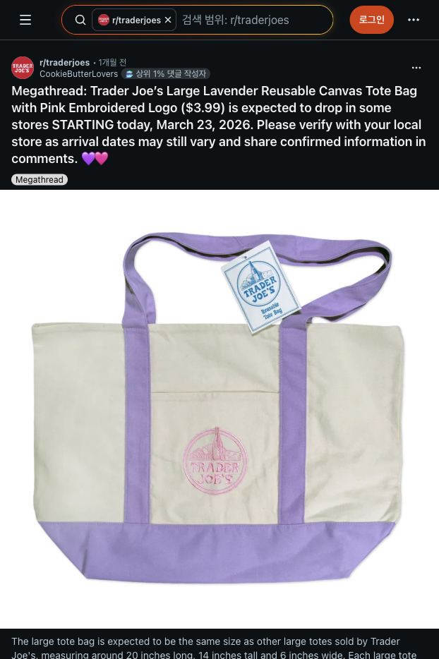
TJ 최신
Mini Canvas가 없을 때 가족용으로 보이면 1-4개만. 한정 토트는 매장별 수량 제한 가능.
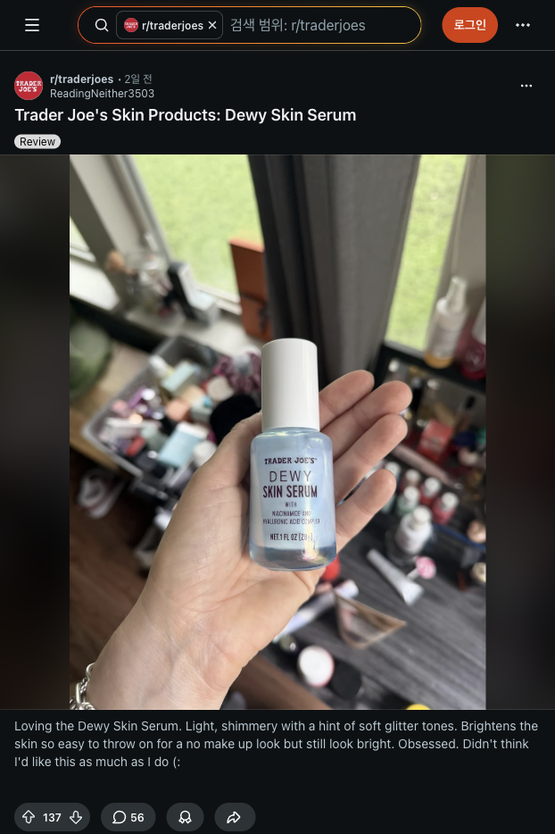
TJ 최신
스킨케어 좋아하는 사람에게만. 민감피부면 피하고 위탁 쪽이 편함.
TJ 최신
남동생/매형/매부/부서 공용 간식 후보. 견과 알레르기만 주의.

Harvard
부모님/본인/가족용으로 가장 알아보기 쉬움. 사이즈 애매하면 크루넥.

Harvard
사이즈 리스크 낮은 안전템. 아빠/매형/와이프 커플템 후보.

Harvard
조카 1살용. 먹는 선물보다 기억에 남고 사진 남기기 좋음.

Harvard
누나/여동생/와이프용 후보. TJ 토트보다 보스턴 티가 더 남.

Harvard 소형
조카/가방 장식용. 인형류를 찾으면 이쪽을 먼저 확인.

Harvard 소형
회사 예비/가족 가벼운 선물. Harvard 티가 확실하고 작음.

Harvard 소형
소형 굿즈 수량 맞추기 좋음. 학생/동생/예비용.

Harvard 소형
가볍고 저렴해서 예비 선물 수량 맞추기 좋음.

Harvard 소형
키링/펜보다 조금 더 선물감 있는 소형 굿즈.
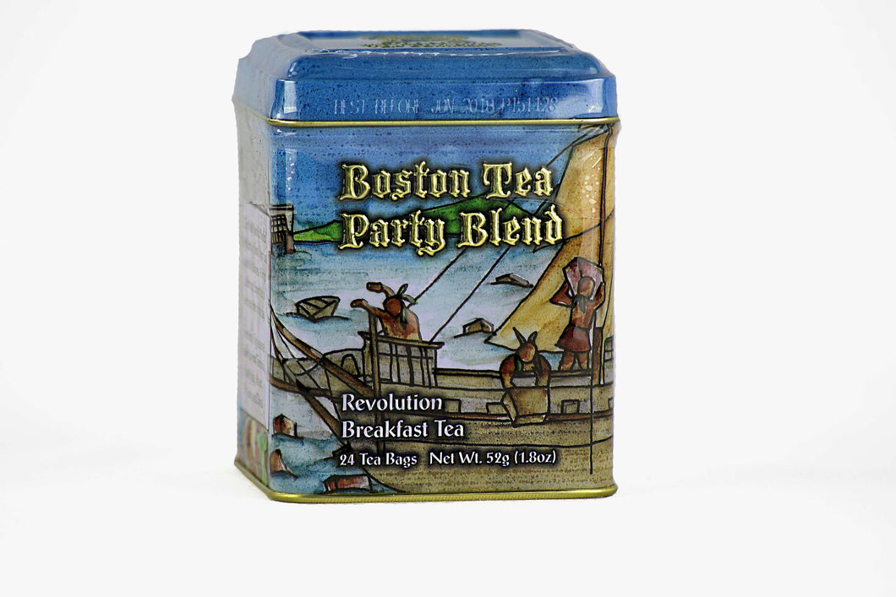
Boston
숙소 근처 Seaport에서 살 수 있고 Boston 이야기가 확실함. 차 마시는 가족/부서장님 후보.
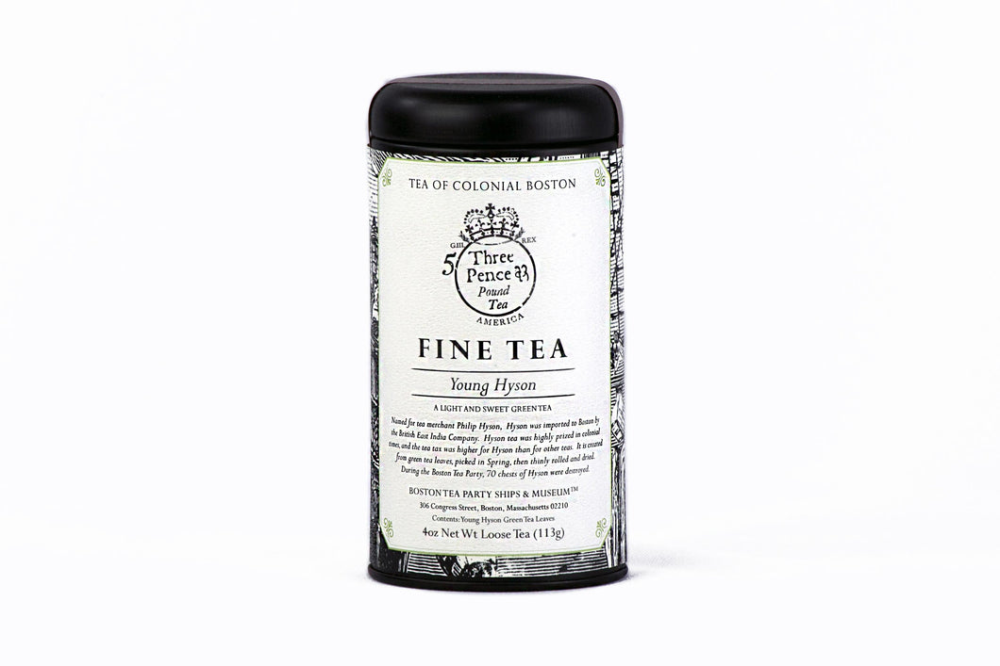
Boston
Boston Tea Party에 실제 던져졌던 차 종류 컨셉. 부모님/상급자용으로 말이 됨.
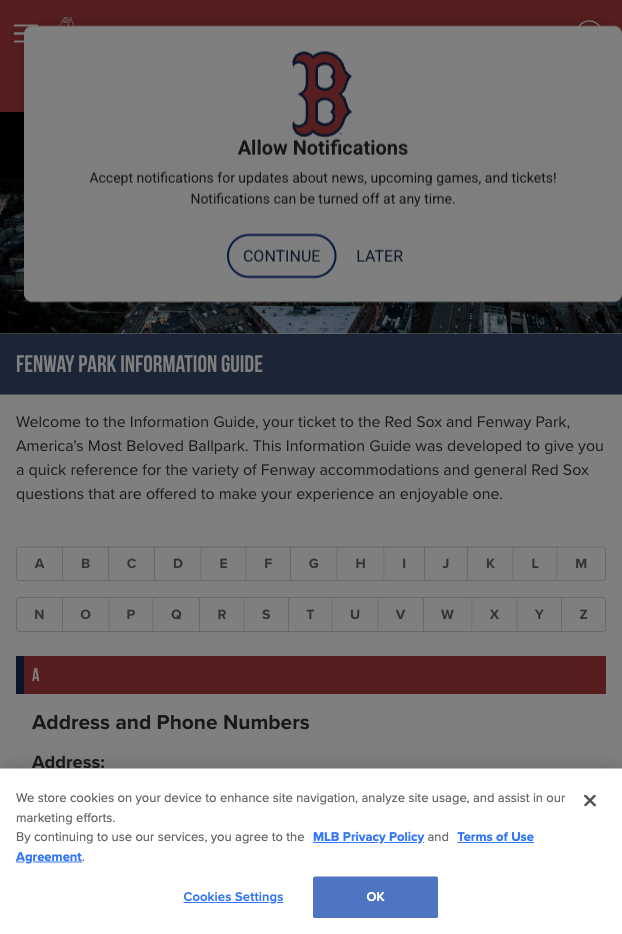
Boston
Fenway 시간이 맞으면 cap/ball/keychain. 보스턴 스포츠 상징이라 Harvard 다음으로 지역성이 강함.
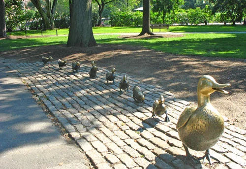
Boston
조카 4살용 Boston 대표 그림책. 책이 부담이면 작은 오리 인형/소품으로 대체.
Boston
MFA를 가면 엄마/와이프/누나·여동생용으로 좋음. 안 가면 굳이 우회하지 않기.
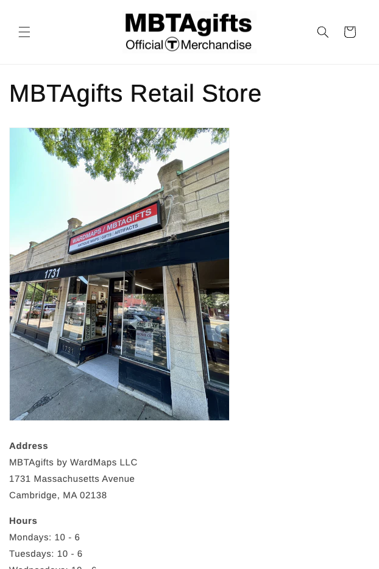
Boston
조카 4살, 교통/지도 좋아하는 사람에게. Cambridge 시간이 맞을 때만.
CVS/Walgreens
건조한 입술/손/발꿈치/쓸림에 쓰는 실용템. 와이프·가족 토트 안 보조 선물로 1-3개.
CVS/Walgreens
여행 중 물집/쓸림에 바로 쓰기 좋고 한국 와서도 상비용. 선물 느낌보다는 가족 실용템.
CVS/Walgreens
상처용 항생연고. 회사 선물은 아니고 부모님/집 상비약으로 1개만.
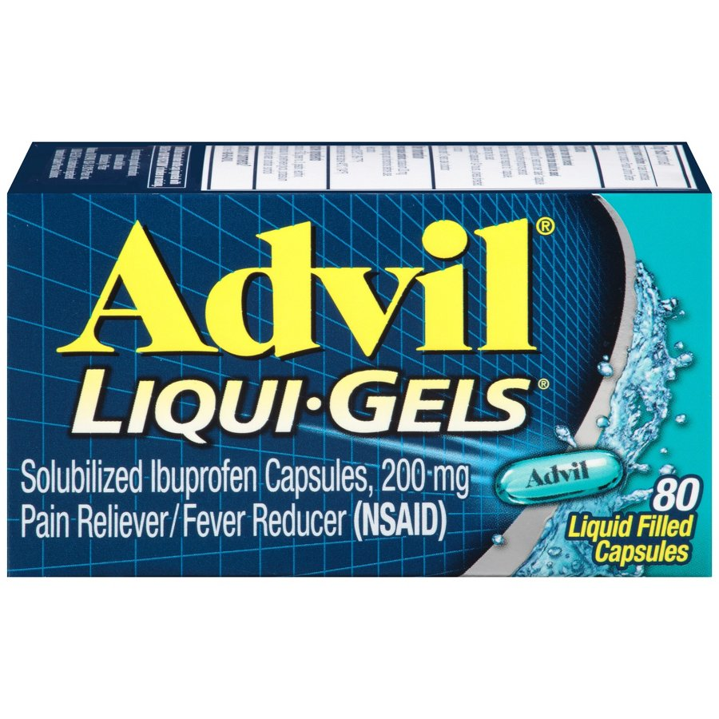
CVS/Walgreens
본인/가족 상비용 진통소염제. 복용 가능 여부가 갈리니 대량 선물 말고 1개만.
지도는 PDF에서 크게 보이도록 세로 문서 폭 전체로 넣었습니다. 실제 이동할 때는 캡처보다 아래 Google Maps 버튼을 눌러 현재 위치 기준으로 다시 여는 게 정확합니다.
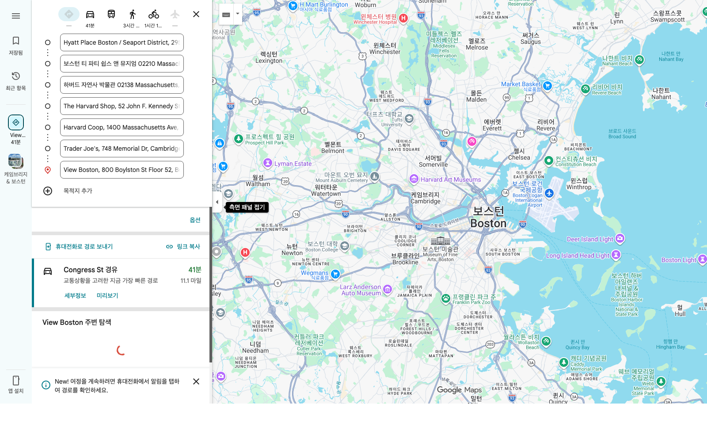
왼쪽 검색 패널을 덜어낸 확대 캡처입니다. 실제 Harvard/TJ 구간은 위 “Cambridge 구간만 열기” 링크로 다시 열어 보세요.
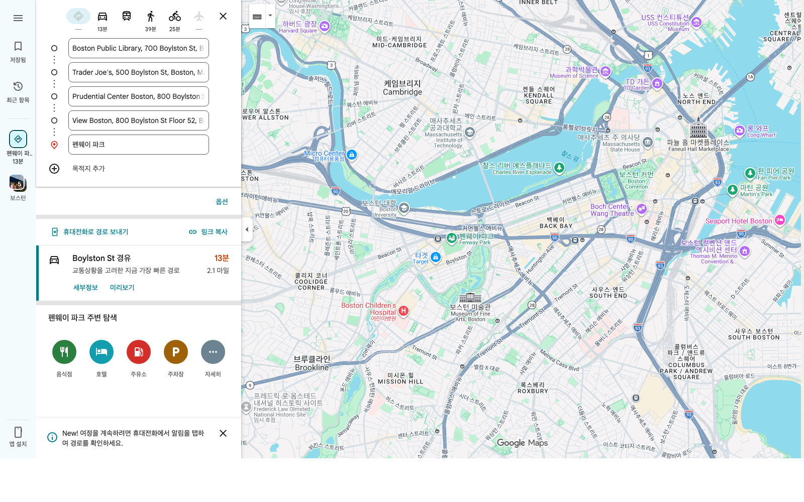
Back Bay/Prudential 구간 확대. 지도 캡처에는 CVS가 별도 핀으로 들어가 있지 않으니, 실제로는 위 CVS Prudential 버튼을 눌러 현재 위치 기준으로 여세요.
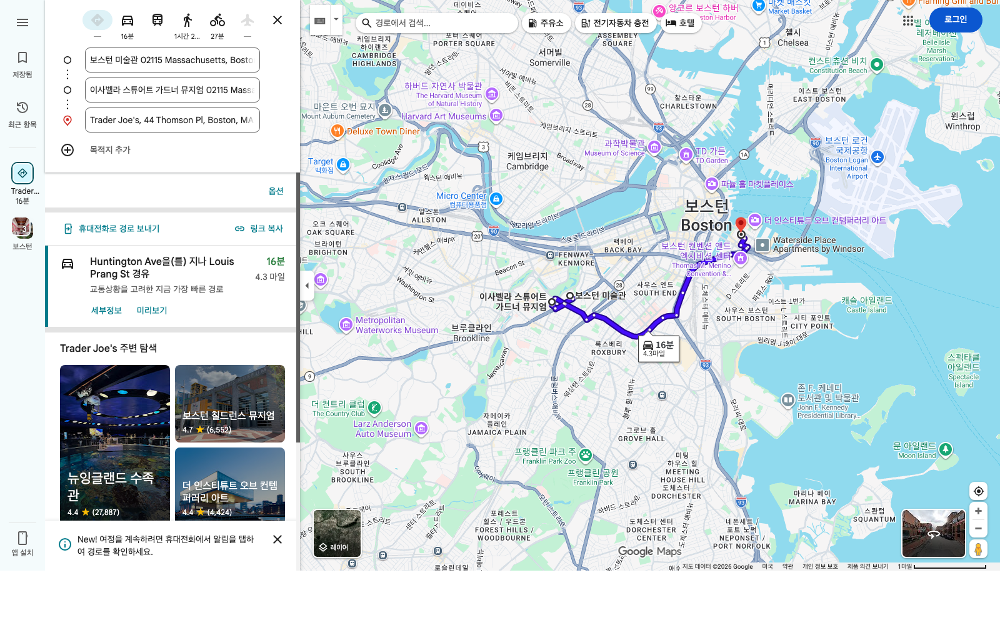
수요일은 비 가능성 대응일이라 이동보다 실내 체류와 선물 마감이 우선입니다.
한국 반입
Everything But The Bagel은 사지 않습니다. 신선 과일, 육류/가공육, 냉동식품도 선물에서 제외.
위탁
Chili Onion, 향수, 시럽, 스프레드, 100ml 초과 화장품은 위탁. 유리병은 옷으로 감싸세요.
의약품
Neosporin/Advil/Tylenol 등은 라벨 그대로 소량만. 가족 상비용이지 동료 대량 선물이 아닙니다.
캐리어
보냉백은 1-3개만. 회사용은 시즈닝/초콜릿처럼 작고 가벼운 것으로 수량을 맞춥니다.
아래는 문서에서 바로 열 수 있는 Google Maps 링크입니다.
한국 후기와 Reddit/공식 캡처는 이미 상품 선정에 반영했고, 본문 상단에는 실행 정보만 남겼습니다. 약국템은 2025-2026 한국어 CVS/미국 약국 쇼핑 후기와 제품 페이지, 통관 주의 문서를 같이 보고 선별했습니다. 토트 제한은 공식 상품의 limited supply 문구와 2024-2026 매장별 제한 사례를 함께 봤습니다.
{kind=link}
{kind=link}
{kind=link}
{kind=link}
{kind=link}
{kind=link}
{kind=link}
{kind=link}
{kind=link}
{kind=link}
{kind=link}
{kind=link}
{kind=link}
{kind=link}
{kind=link}
{kind=link}
{kind=link}
{kind=link}
{kind=link}
{kind=link}
{kind=link}
{kind=link}